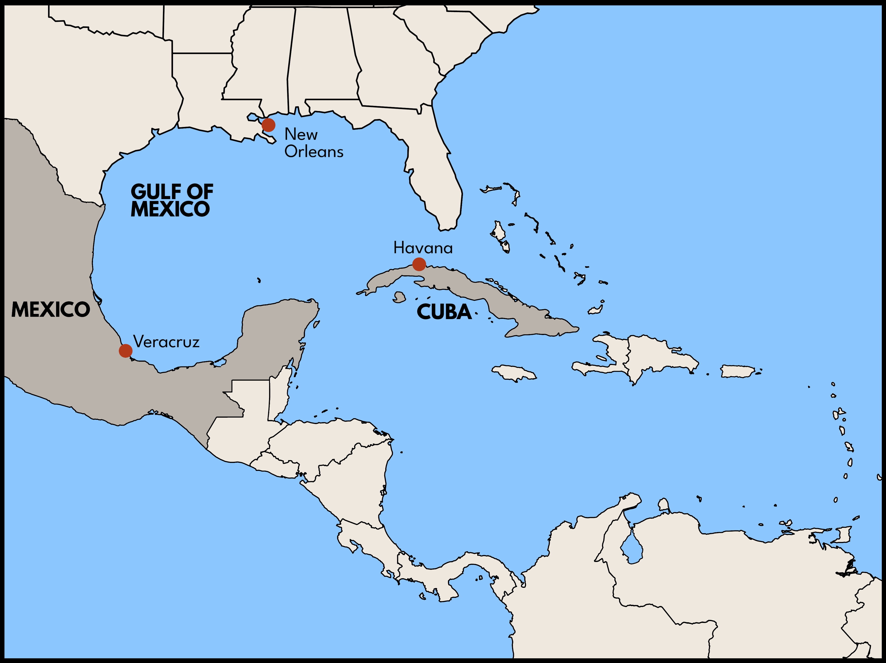

Q: Did jazz come from Latin America?
A: In part. Jazz may be quintessentially American, but its origins were transnational.
The origins of jazz are complex. Ragtime was a key precursor of the genre as were vaudeville, early blues, the Clef Club Orchestra of James Reese Europe, and the stride piano style developed by New York-based musicians such as James P. Johnson and Willie “The Lion” Smith. In addition to these elements, nearly every version of early jazz history also mentions the innovations of African American musicians in New Orleans. According to one version of this story, New Orleans jazz resulted from the meeting of two Black communities in the city. Uptown Blacks like King Oliver and Louis Armstrong, whose families migrated from the plantations of the South, grew up with the uninhibited, ecstatic music of the sanctified church, while downtown Creoles like Sydney Bechet and Jelly Roll Morton, members of a prosperous, urban community, enjoyed a long tradition of music education.
Yet this account of early jazz in New Orleans is incomplete because it neglects the deep transnational currents that have long influenced the city’s musical culture. Located on the Gulf of Mexico and for 40 years (1763-1803) an outpost of the Spanish colonial empire, New Orleans was very much a part of a larger Gulf region with close connections to both Mexico and Cuba. According to one analysis, 24 percent of the city’s first-generation jazz artists born before 1900 were of Hispanic heritage, and many others had direct family ties to the French Caribbean.


The sounds of the Caribbean were omnipresent in New Orleans thanks to the constant circulation of musicians. In a 1938 interview at the Library of Congress, the pianist Jelly Roll Morton famously described the “Spanish tinge” he put in his music by emulating the habaneras he heard growing up: “if you can't manage to put tinges of Spanish in your tunes, you will never be able to get the right seasoning, I call it, for jazz.” In Morton’s song, “The Crave,” you can hear him playing clear habanera and tresillo bass patterns with his left hand, while his right hand plays the melody.

But recent scholarship suggests that the influence of Latin American -- and particularly Cuban -- music on early jazz goes well beyond the presence of certain bass lines. The danzón was the most popular Cuban dance in the late nineteenth and early twentieth centuries, and many Mexican and Cuban bands that visited New Orleans in these years specialized in the genre. As the musicologists Alejandro Madrid and Robin Moore have shown, early danzón recordings reveal two features that were central to the form of jazz being developed at this time: polyphony (multiple melodies played simultaneously) and improvisation.
Take “La Patti negra,” a danzón by the Cuban Orquesta de Pablo Valenzuela and recorded by Edison in 1907. The song was written in homage to Matilda Sissieretta Joyner Jones, an African American soprano whose stage name was “The Black Patti." Here the melody is performed on violin and clarinet. If you listen closely you can tell that the violin and clarinet are not playing exactly the same notes. Now here is another section of the recording, in which the violins and clarinet play roughly the same thing twice in a row. But in this section, you can also hear a bunch of other horns playing a lower melody as well as a cornet, or small trumpet, improvising (inventing in other words) yet another tune. The New Orleans jazz that would become famous in the late 1910s would feature just this sort of raucous polyphony and improvisation. Here, ten years earlier, was a Cuban band, with no known history of travel to New Orleans, playing in a strikingly similar style.
For an example of what African American musicians from New Orleans would be doing with polyphony and improvisation in the 1920s, here is “Dippermouth Blues,” recorded in 1923 by King Oliver’s Creole Jazz Band.
Evidence like this suggests that the development of New Orleans jazz was made possible by the rich, transnational cultural flows that were typical of the city.
Further Reading:
- Thomas Brothers, Louis Armstrong's New Orleans (Norton, 2007)
- Alejandro L. Madrid and Robin D. Moore, Danzón: Circum-Carribean Dialogues in Music and Dance (Oxford, 2013).
- Bruce Boyd Raeburn, “Beyond the ‘Spanish tinge’: Hispanics and Latinos in Early New Orleans Jazz,” In Eurojazzland, edited by Luca Cerchiari, Laurent Cugny and Frank Kerschbaumer (Northeastern University Press, 2012), 21–46.
Find even more on this topic in our bibliography.